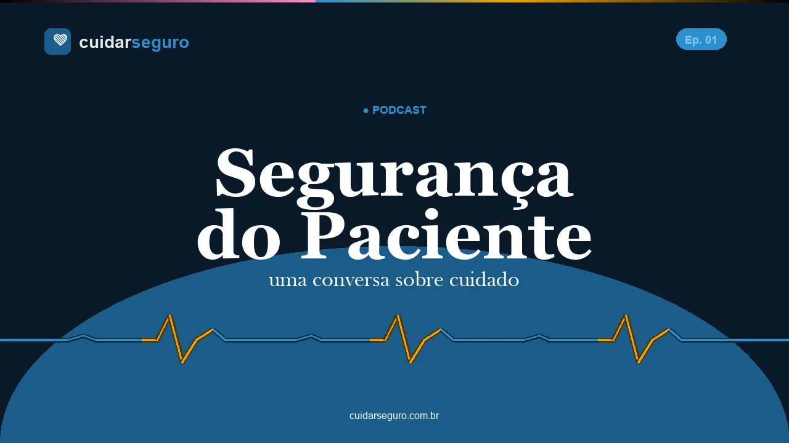

🩺 Para quem cuida
Cuidar bem começa com segurança
Conteúdo educacional sobre segurança do paciente para estudantes, profissionais e educadores da área da saúde. Aprenda a prevenir danos e transformar a cultura do cuidado.
Conteúdo educacional sobre segurança do paciente para estudantes, profissionais e educadores da área da saúde. Aprenda a prevenir danos e transformar a cultura do cuidado.
Conteúdo organizado por grandes áreas temáticas, com base nas Metas Internacionais de Segurança do Paciente da JCI e nos protocolos do Ministério da Saúde.
Erros de identificação estão entre os mais frequentes. Aprenda os dois identificadores obrigatórios e quando aplicá-los.
Protocolo ANVISA →Os 5 certos e os medicamentos de alta vigilância. Prevenção de erros nas etapas de prescrição, dispensação e administração.
Protocolo Ministério da Saúde →A intervenção mais eficaz e mais simples. Os 5 momentos da higienização e as técnicas corretas com água/sabão e álcool gel.
Manual BVSMS →Protocolo do checklist cirúrgico da OMS. Prevenção de cirurgia em local errado, paciente errado e procedimento errado.
Protocolo Ministério da Saúde →Falhas de comunicação estão entre os principais fatores contribuintes para eventos adversos. SBAR, read-back e a passagem de plantão segura.
Artigo Proqualis/Fiocruz →Avaliação de risco, escalas validadas (Morse, Humpty Dumpty) e intervenções preventivas no ambiente hospitalar.
Protocolo Ministério da Saúde →Estadiamento, escalas de risco (Braden) e cuidados preventivos. Como incluir a família nos cuidados.
Protocolo ANVISANotificação de incidentes, cultura justa e aprendizado com os erros. Como construir ambientes mais seguros.
Fundamentos
Panorama sobre segurança do paciente na prática assistencial. 23 min
Ouvir no YouTube →Estatuto do Paciente, direitos, ética e o que significa cuidar com segurança. 13 min 44 s
Ouvir o episódio →Slides, checklists, resumos e guias práticos disponíveis gratuitamente para estudantes e profissionais de saúde.
Apresentação completa com 45 slides, baseada no currículo da OMS para profissionais de saúde.
PDF · 45 slides ↗Guia de bolso para uso na prática clínica com as 6 metas da OMS adaptadas ao contexto brasileiro.
PDF · 1 páginaGuia oficial da OMS/MS/ANVISA com orientações para cirurgia segura. Segundo Desafio Global para a Segurança do Paciente.
PDF · OMS · Acesso gratuito ↗Garante dignidade, respeito, informação e participação nas decisões sobre o cuidado em saúde. Publicada e em vigor desde 07/04/2026.
Infográfico · Lei ↗Anestesiologista exclusivo obrigatório em qualquer nível de sedação. Revoga a Res. 1.670/2003. Vigência em março de 2027.
Normativa · Resumo · Infográfico ↗Caso simulado para discussão em sala de aula com perguntas norteadoras e gabarito comentado.
PDF · 4 páginas ↗Diagrama de Ishikawa e Protocolo de Londres.
PDF · 3 páginas ↗Terminologia padronizada da OMS e ANVISA para uso em estudos, trabalhos e relatórios clínicos.
PDF · 8 páginas ↗Um glossário vivo e pesquisável — além de segurança do paciente, também cobre termos de tecnologia, inteligência artificial e negócios, com cada termo linkado a termos relacionados, como uma wiki.
Visitar o Glossário →Definidas pela OMS e adotadas pelo Ministério da Saúde e ANVISA como base para o cuidado seguro no Brasil.
Textos educacionais, resumos de evidências e reflexões sobre segurança do paciente. Atualizado regularmente com novos artigos.
Infográfico com as quatro categorias da Classificação Internacional da OMS/ANVISA — condição insegura, near-miss, evento adverso e evento sentinela — com exemplos práticos e critérios de notificação.
Ver infográfico →O que o Estatuto do Paciente muda na prática? 13 minutos com uma das principais especialistas brasileiras em direitos humanos na saúde.
Ouvir episódio →SBAR, CUS, Two-Challenge Rule e speaking up: como transformar uma preocupação farmacoterapêutica em ação segura em ambientes com gradiente de autoridade.
✍️ Prof. Luis Antonio Diego
Ler artigo →A OMS escolheu as doenças não transmissíveis como tema de 2026. Entenda por que a segurança precisa acompanhar toda a jornada do paciente crônico — da prevenção ao autocuidado.
Ler artigo →Sepse é tempo-dependente: veja 7 estratégias institucionais de prevenção, identificação precoce e indicadores para monitorar.
✍️ Patrícia Shimabukuro
Ler artigo →A OMS escolheu as doenças crônicas como tema de 2026. Entenda a conexão com segurança do paciente e o que muda com o novo Estatuto do Paciente (Lei 15.378/2026).
Ler artigo →Como a acreditação fortalece governança, segurança do paciente e cultura de melhoria contínua nas organizações de saúde.
✍️ Patrícia Shimabukuro
Ler artigo →Texto integral e resumo executivo: direitos e deveres do médico, classificação de risco e governança. Em vigor desde 26/08/2026.
Ler a resolução →O que a Lei 15.378/2026 garante, quem precisa estar na sala, como registrar suas preferências — e a diferença entre equipe essencial e observadores.
Ler artigo →Por que a lista de remédios de casa importa, o que fazer em cada ponto de transição e o que nunca esconder da equipe durante a internação.
Ler artigo →Avaliação pré-anestésica, monitoração contínua obrigatória, checklist cirúrgico e critérios de alta da sala de recuperação — o que a resolução CFM 2.174/2017 prevê para você.
Ler artigo →O que o farmacêutico clínico busca na revisão de medicamentos, como funciona a conciliação e o monitoramento de antibióticos — e o que você pode informar para ajudar.
Ler artigo →NSP, ouvidoria, e-Notivisa, VigiMed, ANS, CRM, VISA: guia por tipo de situação para saber onde registrar o que aconteceu — e o que esperar de cada canal.
Ler artigo →BPMH, classificação de discrepâncias, medicamentos potencialmente perigosos e evidência sobre desfechos clínicos — revisão para médicos, farmacêuticos e enfermeiros.
Ler artigo →Como o ciclo Plan-Do-Study-Act estruturou a implantação de um serviço de anestesiologia: 29 itens mapeados e monitorados mês a mês.
Ler artigo →Como a notificação sistemática de intercorrências anestésicas em dois hospitais privados de São Paulo (2017–2022) gerou um protocolo institucional de segurança.
Ler artigo →A formação precoce em cultura de segurança é determinante para a prática clínica futura. Entenda por quê.
Ler artigo →Uma análise dos momentos preconizados pela OMS e a adesão em contextos reais de treinamento clínico.
Ler artigo →Ela está no leito, com a pulseira que você colocou — ou não colocou. Tomando o medicamento que você checou — ou não checou. 9 decisões. Nenhuma segunda chance para o paciente.
Sociedades brasileiras comprometidas com a cultura de segurança do paciente — referências para profissionais, pesquisadores e educadores.
O Cuidar Seguro nasceu da necessidade de oferecer materiais atualizados, baseados em evidências e acessíveis para estudantes, profissionais e educadores da área da saúde no Brasil.
Conteúdo baseado nas diretrizes da OMS e nos protocolos do Ministério da Saúde / ANVISA
Desenvolvido por educadores e profissionais de saúde comprometidos com a qualidade do cuidado
Materiais gratuitos e de acesso aberto para estudantes, profissionais e professores da área da saúde
Atualizado regularmente com novos casos clínicos, artigos e recursos didáticos
"Segurança não é um departamento. É uma responsabilidade de todos que cuidam."


Dúvidas, sugestões de conteúdo ou interesse em colaboração? Escreva para nós.
Seja você estudante, professor ou profissional de saúde interessado no tema, entre em contato. Também recebemos sugestões de materiais e propostas de colaboração.
Seu nome e e-mail são usados apenas para liberar o acesso a este assistente. As perguntas enviadas são processadas por um serviço de inteligência artificial para gerar as respostas. Para solicitar a exclusão dos seus dados, use o formulário de contato.